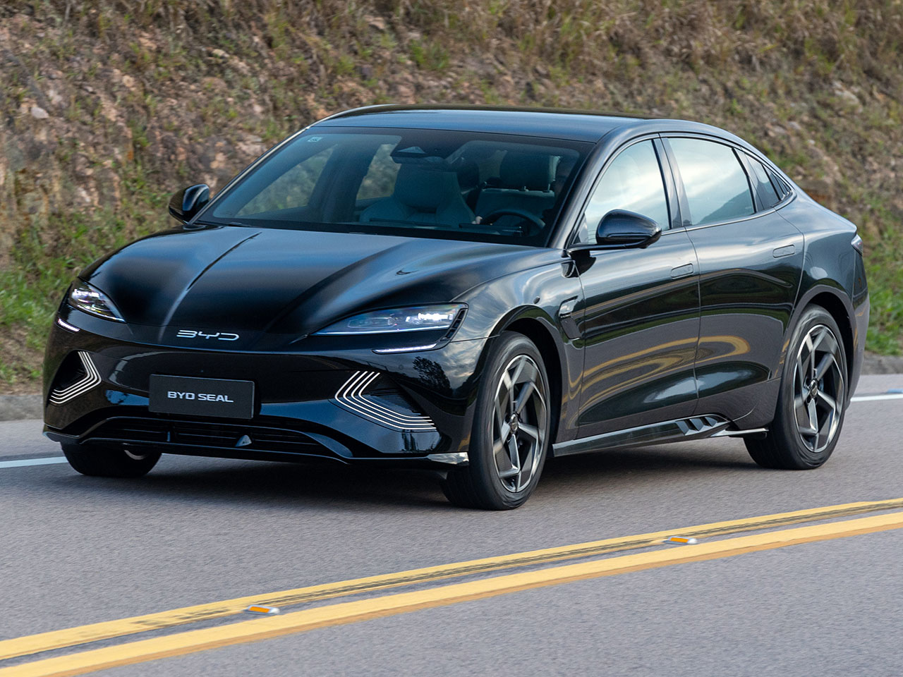
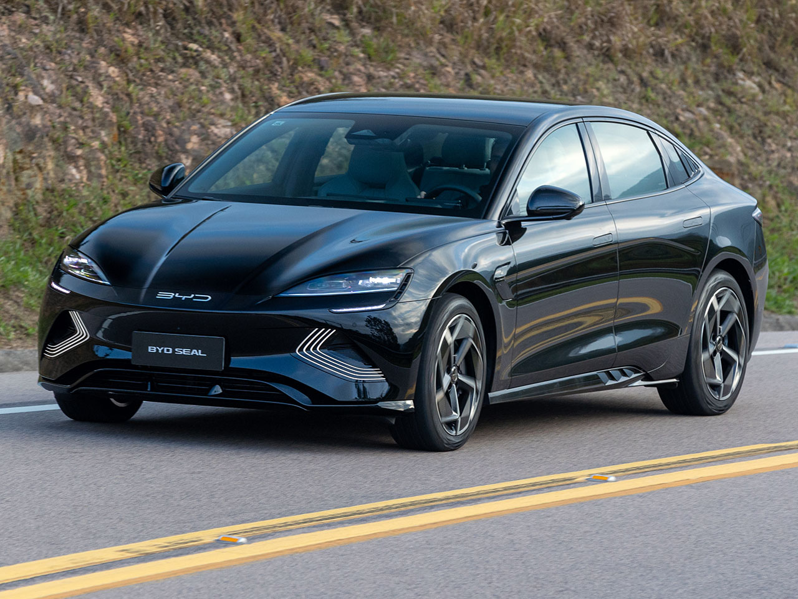

A BYD, sigla para "Build Your Dreams" (Construa Seus Sonhos), é uma empresa chinesa de tecnologia especializada em várias áreas, incluindo veículos elétricos (VEs), baterias recarregáveis, painéis solares e outros produtos relacionados à energia limpa e sustentável.
Fundada em 1995, a BYD começou como uma empresa de baterias recarregáveis e, ao longo dos anos, expandiu seu portfólio para incluir uma ampla gama de produtos de energia limpa. Ela se tornou uma das principais fabricantes de veículos elétricos do mundo, oferecendo desde carros elétricos de passageiros até ônibus elétricos, caminhões e até mesmo empilhadeiras elétricas.
Além dos veículos elétricos, a BYD é conhecida por sua produção de baterias de íon de lítio, que são amplamente utilizadas em uma variedade de dispositivos eletrônicos e sistemas de armazenamento de energia, como instalações de armazenamento de energia solar.
A empresa também se destacou na fabricação de painéis solares e sistemas de energia solar, tornando-se uma solução abrangente para muitas necessidades relacionadas à energia renovável e sustentável.